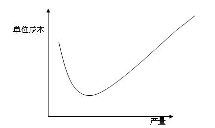

职业规划与领导力发展课程学习心得
2008.07.18
06级信息学院智能科学系本科生 顾鑫峰
王老师讲座的题目是：用经济学的眼光理性地看待世界。的确，当今社会是一个全球经济一体化的时代，中国也在市场经济的大潮中快速发展。可以说，整个社会的各个方面都离不开经济。对个人而言，学习、生活、工作等每一方面也离不开经济因素。因此，我认为，生活在这样一个时代，人们应该具有经济头脑，学会用经济眼光看问题，尤其是当代的大学生，尤其是肩负着中华民族伟大复兴重任的北大学子！
以经济眼光看待世界，并不是惟利是图，而是对现实社会中的种种现象做出理性的思考，同时也能使自己更加适应这个社会环境。正如王老师所言，当我们看到某条新闻、或者听闻国家作出某项决策时，用自己的思维来想想为什么会这样，想想这背后的经济因素，会有很大收获。
王老师在讲座里一共列了十大经济学基本原理，我都一一进行了思考，尤其对其中的四个经济学原理，我深有感触。因此，在下面的心得中，我将详细介绍我对这四个经济学原理的认识和理解。
原理1:人们面临着权衡取舍。
我的理解：俗话说，天下没有免费的午餐。有时候人们为了得到某个自己喜欢的东西，通常不得不放弃其它的东西，正所“谓鱼和熊掌，不可兼得”。也就是说，人们在作出决策时，往往要求其在两个或多个目标之间有所取舍。通过这一原理，我认识到了现实生活中权衡取舍的重要性，只有细致分析好各个选择项的利弊，才能做出正确的选择。
实例：对于我们学院的本科毕业生，往往有三条出路，即工作、保研、出国。很多人在进行选择时往往比较矛盾，不知道自己该走那条路，因为每条路都有各自的优缺点。这就是经济学原理中所指的人们面临着权衡取舍。我将这三条的利弊做了一个表格，进行了如下的分析：
|
优势 |
弊端 |
工作 |
2.可以早点为家庭做贡献，减轻家庭负担。 |
|
保研 |
|
1.就业较晚，三年后该行业的状况可能会发生一些不可预测的变化。 |
出国 |
|
|
通过上面的分析，我们可以看到，工作、保研、出国各有利弊，无所谓谁好谁坏，每个人都可以根据自己的实际情况和兴趣作出选择，条条大路通罗马。对我个人而言，我很注重自己的专业知识的学习，所以我会选择继续深造。同时考虑到对于出国深造，如果想到顶级学校（如MIT、斯坦福、东京大学、加州大学等）就读，本科需要有在系里面前几名的成绩，而我不具备，虽然我的成绩也还不错，十几名左右，可以到诸如美国的二流大学深造，但是北大也是不错的大学，而且中国的发展也很快，有很多机会，所以综合这些因素，我选择了保研。我不敢说这是最正确的，但我认为这是最适合我的。
原理2：一种东西的成本是为了得到它而放弃的东西。当作出任何一项决策时，决策者应该认识到伴随每一种可能的行动而带来的机会成本。
我的理解：当人们在进行选择的时候，往往需要取舍，只能选择一个。每一个选择都是一条路，那么这条路的成本便是其它所有路中可能价值最大的一条路的价值。也就是说，得到一件事物的同时便意味着失去了其它是事物，而得到的这件事物的机会成本就是失去的其它事物中价值最大的一个。
实例：比如婚姻，我们都知道婚姻是一夫一妻制，我们只能选择一个配偶，这是道德、法律的约束，也是起码的行为准则。如果从经济学原理的角度来说，选择一个配偶的机会成本便是可能遇到的其它异性朋友中最适合自己的一个。选择了一个人，就不可能也不可以考虑其它人，因此，我们才说，婚姻大事，必须慎重。再比如，假设一个农民的土地、时间、精力是一定的，如果他选择养鸡就不能选择养鸭，养鸡的机会成本便是养鸭的收益。假设养鸡可以获得A元，养鸭可以获得B元，那么养鸡的机会成本是B元，同样的，养鸭的机会成本则为A元。 再从职业规划的角度举一个例子，我们知道，一个人在同一时间只能从事一种工作，假如一个北大博士生毕业后有三个Offer，分别是谷歌的搜索研发工程师，某大型国企的工程师，中科院的研究员。那么选择某一个职业的机会成本便是其余两条路的价值。如选择了谷歌，便可能会失去大型国企比较宽裕的时间，可能失去了到中科院做研究获得巨大成就（比如30年后获得图灵奖）的机会。再如选择了中科院，机会成本可能就是在谷歌的高收入和在国企的良好福利，等等。
原理3：经济人考虑边际收益
我的理解：生活中许多决策，涉及到对现有行动计划进行微小的增量调整，可以称之为边际变动。当进行边际变动时，会付出一定的成本，称之为边际成本，同时会获得效益，即边际效益。只有当边际成本大于边际效益的时候，决策才是正确的。例如，生产某种产品 100个单位时，总成本为3，000元，单位产品成本为 50元。若生产 101个时，其总成本3，040元，则所增加一个产品的成本为 40元，即边际成本为40元。一般情况下，当实际产量未达到一定限度时，边际成本随产量的扩大而递减；当产量超过一定限度时，边际成本随产量的扩大而递增。因为，当产量超过一定限度时，总固定成本就会递增。可以用下面的图表表示：

这是可以理解的，假如一台机器一天不停工作，可以生产10，000个零件，那么当每天生产100个零件的时候，显然成本很高，因为机器大部分时间闲置，而机器本身的成本很高；当生产超过10，000个零件时，单位成本增长，因为一台机器不够，需要购置新的机器。
实例：在北大南门周围，有两个地方，一个叫牛福记，一个叫半亩塘。这两个地方都是通宵营业，所以有很多北大的学生，晚上都会到那里自习，特别是每当期末来临之际，这两个地方更是爆满，想找个地方都难。牛福记是个餐馆，里面环境很好，可以上网，而且还为同学们准备很多插座，供带着电脑的同学使用。里面主要是牛肉套餐，面条之类的食物，价格略贵，不过口味很好，服务员的态度也很好。半亩塘是个水吧，进门就得付18块钱，里面有各种饮料饮品，也是通宵营业，环境也还不错，也可以上网。由于这两个地方几乎每天晚上都爆满，因此商家看到有利可图，便对盈利模式进行了一些调整。
首先说牛福记，本来对消费者是没有要求的，即使是坐在里面自习，不进行任何消费也可以，没有人管你。现在调整到最低消费10元，这样自然会有一些同学不愿意去自习了，因为有了最低消费。但是，原来牛福记的座位就是远远供不应求的，所以当有了最低消费后，尽管去的人少了一点，但也基本能坐满，而且营业额显著上升，对商家而言，这种改变是划算的。
再来说半亩塘，半亩塘也看到座位供大于求，因此也进行了调整。原来里面可以免费赠送三样小吃（瓜子，豌豆之类），现在全取消了，原来可供选择的饮料及其丰富，现在减少了很多，比如没有了某些咖啡，冰淇淋等。经过调整，半亩塘的人数骤减，虽然单个人的成本下降，但由于人数骤减，有时候只有不到座位数一半的人，对商家而言，显然是不划算的了。
为什么两者的调整出现了不同的效果呢？首先，我认为这两个商家的调整都属于边际调整，通过微小的调整，会付出一定的成本，这个成本便是顾客的减少，但也会有效益，牛福记的效益是平均每个人的消费额上升；半亩塘的效益是每个人的成本降低。但为什么效果不一样呢？我认为有如下原因：牛福记的商家本来就很亏，因为确实有很多同学去自习不消费，所以定十块的最低消费，大部分同学还是可以接受的，而且晚上同学们自习也难免会饿，吃点夜宵也理所当然，所以顾客群不会少很多；但半亩塘就不一样了，已经收了十八块钱，已经不少了，有很多人是先去牛福记，找不到座才到半亩塘来的，在这种情况下还免除小吃，减少可供选择的饮品，很多人自然不愿意来了，而且晚上同学们会饿，连小吃都没有，也不让自带食品，非得再掏钱买里面很贵的食品，这样一个晚上的消费就得二十以上了，这就超出了不少同学的经济承受能力，所以顾客群自然会骤减。
所以，商家在对盈利战略进行边际调整的时候，一定要对市场进行调查，明确边际成本和边际收益，只有当边际成本小于边际收益的时候，该边际调整才是成功的。
原理4：人们会对激励作出反应。
我的理解：在经济领域，人们通过比较成本与效益作出决策，所以当成本或效益变动时，人们的行为也会改变，也就是说人们会对激励作出反应。 因此，在作出一项决策时，不仅应该考虑其直接影响，而且应该考虑激励发生作用的间接影响。如果决策改变了激励，它将使人们改变自己的行为。就好像在一个公司里有奖惩制度，对员工的工作表现给予激励。当这种激励比较公平时，会激发员工的工作劲头，有利于公司的发展；当激励不是很公平的时候，比如奖励了工作并不出色的员工或者错误得惩罚了某些表现优异的员工，这种激励则会导致员工的工作积极性下降，不利于公司的发展。
我设计了一个激励的模型。我认为，激励分为正确的激励和错误的激励，正确的激励能促进工作，收到良好的效果；相反，错误的激励会阻碍工作，收到失败的效果。但激励之间也可以相互转化。当工作收到良好的效果时，如果奖励不当，则这种错误的激励会导致失败的效果。同理，即使工作失败了，如果惩罚得当，同样能转化为良好的效果。
实例： 我母亲在一家纺织厂工作。该厂对于裁剪的工人，每天都有工作指标，只有达到指标的，每个月才能拿全额工资。对于超额完成任务的，将给予奖励。奖励的的措施是这样的：假如指标为一天裁剪M件，当一个工人一天裁剪N（N>M）时，按下列计算方法来算奖金：
超产量（N-M） |
奖励 |
超产量不超过A件 |
每件奖励K元 |
超产超过A件但不超过2A件 |
每件奖励2K元 |
超产超过2A件但不超过3A件 |
每件奖励4K元 |
。。。。。。 |
。。。。。。 |
我们可以看到，超产（超额完成指标）会得到奖励，而且超产量越多，其奖励就呈指数增长（因为每件奖励的额度呈指数增长）。这样无疑就大大促进了工人的劳动积极性，促使其努力工作。有一段时间，由于指标定的过高，基本上没什么人能超额完成任务，因此奖励的措施几乎不起什么作用，工人的工作积极性也不高。后来，厂里做了一定调整，降低了基本工资（即完成指标后能得的工资），同时又大大降低了指标，这样就有超过三分之二的工人能超额完成指标，大大调动了工人的积极性，收到了很好的效果。我觉得，我母亲的工厂就很好的利用了激励的作用。一开始，激励不是很恰当，后来做了及时的调整，充分利用了人们会对激励做出反应这一原理，终于起到了良好的效果。